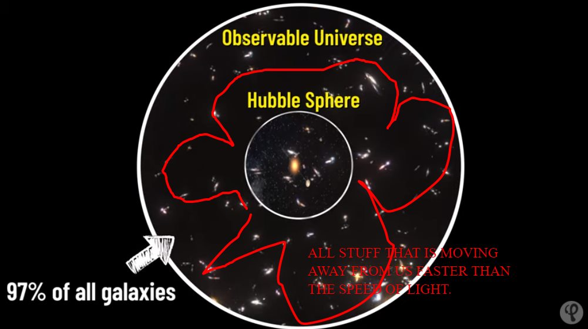

Timeline photos
BREAKING NEWS!
97% of all galaxies in the observable universe are moving away from us faster than the speed of light.
AND the further away from us the faster they are moving. So if the speed of light is the beginning speed, things further away from us are moving WAY faster than the speed of light compared to the things just outside of the Hubble Sphere (which is all stuff moving slower than the speed of light).